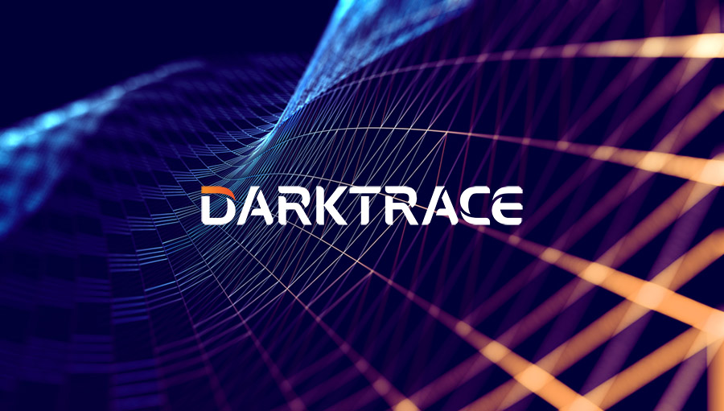

Darktrace es un líder mundial en IA de ciberseguridad y ofrece la plataforma de ciberseguridad esencial para proteger a las organizaciones hoy y para un futuro en constante cambio. Ha sido fundado por expertos globales en IA y ciberseguridad, y ha estado construyendo un nuevo modelo de ciberseguridad desde 2013. Fundada por expertos globales en IA y ciberdefensa, la plataforma de seguridad Darktrace ActiveAI ofrece un enfoque proactivo de la ciberresiliencia ya que proporciona visibilidad preventiva de la seguridad, detección en tiempo real y respuesta autónoma a amenazas conocidas y desconocidas, protegiendo las empresas en la nube, el correo electrónico, las identidades, la tecnología operativa, los puntos finales y la red.
Tienen casi 10.000 clientes, incluyendo organizaciones de todos los tamaños y de todos los sectores. Tenemos alianzas con AWS y Microsoft. Darktrace fue reconocida como una de las empresas de inteligencia artificial más innovadoras de Fast Company en 2022 y fue nombrada socio del año 2024 de Microsoft en el Reino Unido.
Cuando analizamos el impacto medioambiental de la IA, el consumo de agua y energía representa la mayor preocupación, ya que estudios han demostrado que el entrenamiento de GPT-3 consumió unos 78.437 kWh de electricidad, lo que equivale al gasto de una vivienda media española durante 23 años.
El impacto de la inteligencia artificial en el planeta se puede reducir mediante una serie de estrategias. La primera de ellas sería mejorando la eficiencia de los modelos. Por otro lado, podemos optar por energías renovables y, por último, podemos optimizar los sistemas de refrigeración de las infraestructuras, que representan entre el 33% y el 40% del consumo energético total del lugar.